転移学習（機械学習プロフェッショナルシリーズ）
勉強会資料
作成日：2025年7月
第6章 目次
- 6.1 辞書学習に基づくドメイン適応
- 6.1.1 辞書学習の概要
- 6.1.2 辞書学習に基づく自己教示学習
- 半結合辞書学習（SDL）
- 6.2 事前学習済みニューラルネットワークに基づくドメイン適応
- 6.2.1 巨大化する深層モデル
- 6.2.2 事前学習済みモデルの利用
- 6.2.3 自己教師あり学習による深層モデルの事前学習
- 6.2.3.1 自己教師あり学習の概要
- 6.2.3.2 文脈-事例対比型の対照的自己教師あり学習
- 6.2.3.3 事例-事例対比型の対照的自己教師あり学習
- 6.2.4 事前学習済みモデルの転移可能性
- 6.2.5 基盤モデル
第6章の概要
本章の内容
- 古典的には辞書学習で得られる辞書
- 現在ではニューラルネットワークモデルを扱う用語として定着
- 辞書学習について説明
- ニューラルネットワークの事前学習済みモデル
- 転移可能性に関する最近の話題
- 大規模言語モデルに代表される基盤モデル
6.1 辞書学習に基づくドメイン適応
6.1.1 辞書学習の概要
辞書学習（dictionary learning）
データから特徴抽出を行うための方法の一つで、観測データ $\mathbf{x}$ を、辞書（dictionary）と呼ばれる行列 $D = (\mathbf{d}_1, ..., \mathbf{d}_K)$ の各列の線形結合で近似する
この近似は正則化付き最適化問題を解くことで実現される
辞書学習の最適化問題
基本的な定式化
$$\min_{D,\mathbf{u}_1,...,\mathbf{u}_n} \left[ \frac{1}{2}\sum_{i=1}^n \|\mathbf{x}_i - D\mathbf{u}_i\|^2 + \lambda\|\mathbf{u}_i\|_1 \right]$$
$$\text{subject to } \|\mathbf{d}_k\| = 1 \quad (k = 1, ..., K)$$
$$\text{where, } D = (\mathbf{d}_1, ..., \mathbf{d}_K)$$
要素の説明
- 第1項：再構成誤差（データとその近似の差）
- 第2項：スパース性を促す正則化項（L1ノルム）
- 制約条件：辞書の各列のノルムを1に正規化
辞書 $D$ と各 $\mathbf{x}_i$ に対する特徴量 $D\mathbf{u}_i$ を学習する
6.1.2 辞書学習に基づく自己教示学習
自己教示学習（Self-taught Learning）
元ドメインで教師なし特徴抽出を行い、得られた特徴を使って目標ドメインで教師あり学習を行うアプローチ
手順
- 元ドメインの入力データ $\{\mathbf{x}_i^S\}_{i=1}^{n_S}$ から辞書学習
- 目標ドメインの入力データ $\mathbf{x}_j^T$ に対して：
- 最適化問題を解いて特徴量 $\mathbf{u}_j^T$ を学習
- $(u_j^T, y_j^T)$ を新たな目標ドメインのラベルありデータとして使用
- 通常の教師あり学習の方法で仮説 $h$ を学習
目標ドメインでの特徴抽出
目標ドメインの入力データに対する最適化問題
$$\min_{\mathbf{u}_1^T,...,\mathbf{u}_{n_T}^T} \left[ \frac{1}{2}\sum_{j=1}^{n_T} \|\mathbf{x}_j^T - D\mathbf{u}_j^T\|^2 + \lambda\|\mathbf{u}_j^T\|_1 \right]$$
重要な点：辞書 $D$ の学習と仮説 $h$ の学習が完全に独立
利点
- 辞書の代わりにオートエンコーダなど非線形の特徴抽出器も使用可能
- 同様の手順で深層モデルによる自己教示学習が実現可能
元ドメインと目標ドメインでそれぞれ個別に辞書学習を行い結合するアプローチも提案されている(次スライド)
半結合辞書学習（SDL）
ドメイン間の対応関係を考慮
辞書を結合させる手法として、元ドメインの辞書 $D^S$ によるスパース符号化係数 $U^S = (\mathbf{u}_1^S, ..., \mathbf{u}_{n_S}^S)$ と、目標ドメインの辞書 $D^T$ によるスパース符号化係数 $U^T = (\mathbf{u}_1^T, ..., \mathbf{u}_{n_T}^T)$ を変換行列 $W$ で結合
最適化問題
半結合辞書学習（Semi-coupled Dictionary Learning, SDL）
$$\min_{U^S,D^S,U^T,D^T,W} \|X^S - D^S U^S\|_F^2 + \|X^T - D^T U^T\|_F^2$$
$$+ \gamma\|U^S - WU^T\|_F^2 + \lambda_S\|U^S\|_1$$
$$+ \lambda_T\|U^T\|_1 + \lambda_W\|W\|_F^2$$
$$\text{subject to } \|\mathbf{d}_k^S\|_2 \leq 1, \|\mathbf{d}_k^T\|_2 \leq 1, \forall k$$
SDLの各項の意味
| 項 |
意味 |
| 第1項・第2項 |
元ドメインと目標ドメインにおける辞書学習の再構成誤差 |
| 第3項 $\|U^S - WU^T\|_F^2$ |
スパース符号化係数の間の変換誤差（線形変換 $W$ で結合） |
| 第4項・第5項 |
パラメータの正則化項 |
SDLの効果
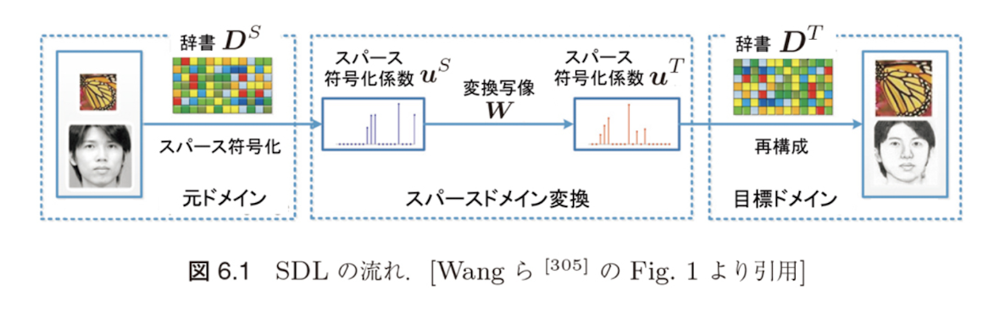
変換 $W$ を単位行列にすれば、恒等写像となり一般的なスパース符号化係数の一致を要請する定式化 [183, 323] を含む
6.1のまとめ
主な手法
- 辞書学習：データをスパース表現で近似
- 自己教示学習：元ドメインで学習した辞書を目標ドメインで活用
- 半結合辞書学習（SDL）：ドメイン間の対応関係を変換行列で表現
次のセクション
6.2 事前学習済みニューラルネットワークに基づくドメイン適応
- 深層ニューラルネットワークモデルの特筆すべき性質
- モデルの大きさと汎化性能の関係
6.2 事前学習済みニューラルネットワークに基づくドメイン適応
6.2.1 巨大化する深層モデル
深層ニューラルネットワークモデルの特筆すべき性質
モデルの大きさと汎化性能の関係
従来の機械学習モデルとの違い
- 従来の統計学や機械学習モデル：「大きなモデルは容易に過剰適合する」という認識が理論的にも実験的にも正しい常識
- 深層モデル：モデルの大きさ（パラメータ数）の増加とともにテスト精度も向上していき、過剰適合が起こらない
図6.2に示すように、深層モデルは従来の機械学習の常識に反して巨大化させることによってその性能を大きく向上させられることがわかってきた
深層モデルのスケーリング則
べき乗則（Scaling Law）
Kaplan ら [155] は、トランスフォーマーによる言語モデルの性能が以下の三つの量に関するべき乗則に従うことを実験的に示した：
- モデルパラメータ数
- データセットのサイズ
- 学習時の計算量
三つの量のうち二つがボトルネックにならないならば、トランスフォーマーの性能は残る一つの量のべき乗で上昇する
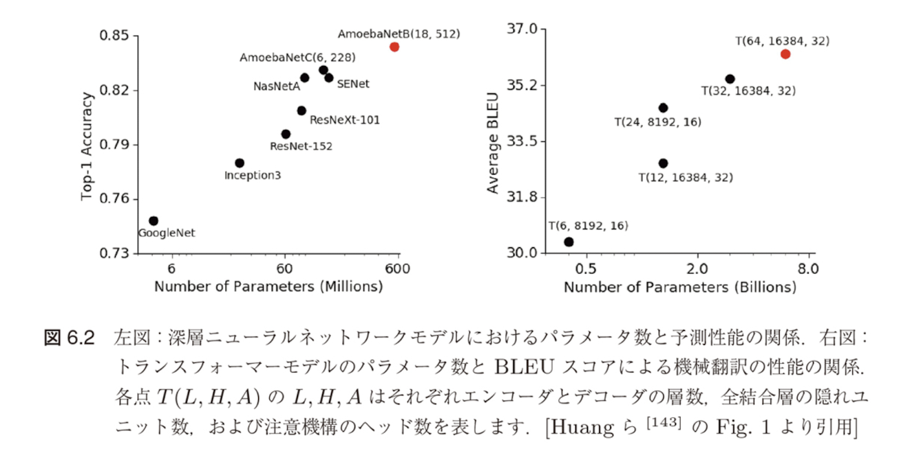
深層モデルの巨大化の推移
パラメータ数の推移
主要な深層ニューラルネットワークモデルにおけるパラメータ数の推移（図6.3）によると、年々凄まじい速さで巨大化していることがわかる
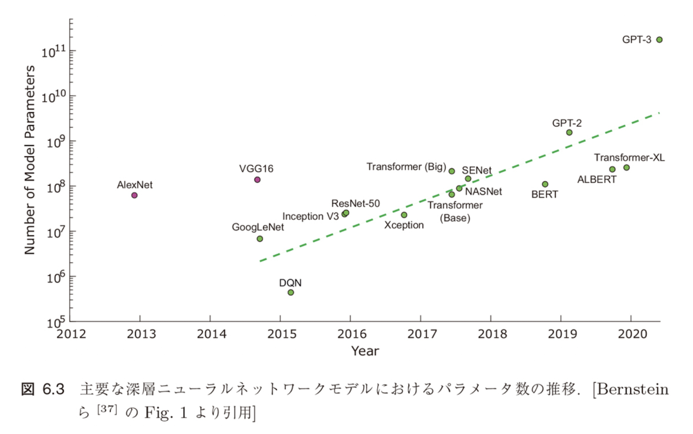
この流れは今後も続くことが予想される
巨大モデルの訓練と利用の課題
計算コストの問題
- GPT-3の例：最大規模のモデルで1750億ものパラメータを持つ
- 当時の市場で最も低価格なGPUクラウドを利用した場合：
- 1回訓練するために460万ドルもの費用
- 355GPU年かかると試算 *1
GPT-3は極端な例だが、巨大なモデルでなくとも、ある程度の規模の深層ニューラルネットワークをゼロから訓練しようとすれば、相当なコストが要求されることは間違いない
事前学習済みモデルによる解決策
効率的なモデル利用の方法
巨大なタスクに少ない訓練コストで適応できるような汎用的なモデルを作り、それを使い回すことが重要
事前学習とファインチューニングによるパラメータ転移
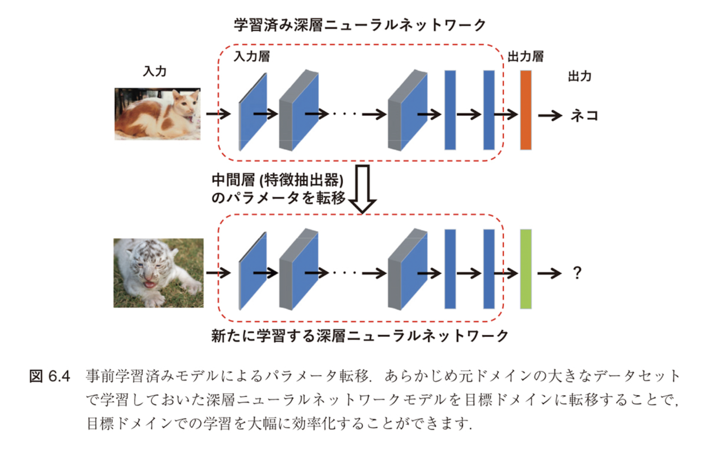
あらかじめ元ドメインの大きなデータセットで学習しておいた深層ニューラルネットワークモデルを目標ドメインに転移することで、目標ドメインでの学習を大幅に効率化できる
6.2.1のまとめ
要点
- 深層モデルの特異性：パラメータ数の増加が性能向上につながる
- スケーリング則：モデルサイズ、データ量、計算量のべき乗則
- 計算コストの課題：巨大モデルの訓練には莫大な費用と時間
- 解決策：事前学習済みモデルの利用による転移学習
6.2.2 事前学習済みモデルの利用
事前学習済みモデルの利用
深層学習を強力な手法たらしめている一つの要因
事前学習済みモデル（pre-trained model）を利用した転移学習
深層モデルの特徴
6.2.1節で述べた通り、深層ニューラルネットワークはモデルのサイズを大きくすることで汎化性能の向上が期待できる
パラメータ転移の重要性
巨大なタスクに少ない訓練コストで適応できるような汎用的なモデルを作り、それを使い回すという方法が重要になってきた
転移の方法
モデルの事前学習とそのファインチューニングによるパラメータ転移（図6.4）
深層学習以前の事前学習済みモデル
初期の事例
- 深層学習以前にも機械学習の分野で、日大な訓練コストがかかるため再利用性向上を目的とした研究
- 単語のクラスタリングやn-gramモデルなど
- ゼロ-ショット（zero-shot）転移：事前学習済みモデルを微調整せずそのまま新しい問題に適用
深層学習における転換点
深層学習ではモデルが大きくて深いため、巨大なモデルをゼロから訓練するには大量のラベルデータと動かな計算資源が必要となり、目標ドメインでのネットワークの訓練コストを大幅に削減できる
目標ドメインへの転移手法
- 目標ドメインでの事前学習済みモデルの利用方法は多数提案されている
- 最近は深層学習済みモデルを再学習時の初期値として用いられる場合もある
ファインチューニングの具体的手法
主要なアプローチ
- ゼロ-ショット転移：事前学習済みモデルをそのまま適用
- ファインチューニング（fine-tuning）：事前学習済みモデルを利用して目標ドメインに合わせてモデル全体を目標ドメインで再学習する
- 線形評価（linear probe）：特徴抽出器としての利用
図6.5のように一部の層のパラメータを凍結（freeze）し、残りの層のパラメータのみを再学習する場合がある
凍結の利点
- モデル全体を再学習の対象とする場合、一見モデル全体をゼロから学習する場合と同等のコストがかかる
- しかし、事前学習済みモデルのパラメータを再学習時の初期値として用いることで、新規タスクにおける学習の最適解への収束までの時間を大幅に削減できる
層の凍結とファインチューニング
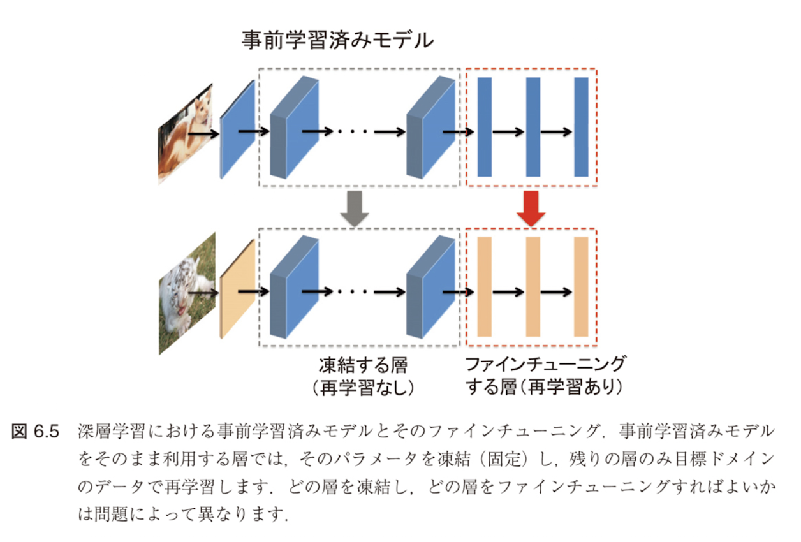
ファインチューニング時の考慮点
- どの層を凍結しどの層を再学習すればよいかは問題ごとに異なる
- 経験的には、最終層に近いほうがよりタスクに特化した特徴を抽出
- それ以外の層はパラメータを凍結して新たなデータでの追加学習を行う方針がよくとられる [170, 228]
例えば、画像データであれば、入力に近い層はエッジやテクスチャに反応し、層が深くなるにつれてテクスチャや、パーツ、各物体を反応していくことを考えると、ImageNetで訓練学習したものは他の自然画像に用いる層を凍結して用いることができそうなことと一致している
6.2.2のまとめ
要点
- 事前学習済みモデル：深層学習を強力な手法にする重要な要因
- 転移の方法：
- ゼロ-ショット転移
- ファインチューニング
- 線形評価（特徴抽出器として利用）
- 層の凍結：一部の層を固定し、残りを再学習
- 初期値としての利用：収束までの時間を大幅に削減
6.2.3 自己教師あり学習による深層モデルの事前学習
自己教師あり学習による事前学習
深層モデルの事前学習の現状
深層モデルの事前学習は、基本的に大規模データを用いた教師あり学習によって行われてきた
例：CNNモデル
- 例えば、ImageNet *3 という人規模な画像データベースに登録された
- 多くの入規模な画像データベースに登録されるモデルは、ImageNet *3 という大規模な画像データベースに登録された数百万枚もの画像データと1000以上の画像データベースで訓練されることで得られたもの
- ファインチューニングすることで得られた転移があります
これらのモデルの成功を受けて、多くの教師あり事前学習済みのニューラルネットワークモデルも開発されています。しかし、教師あり学習による事前学習済みモデルの開発には入る手間のアノテーションに大きく依存します。クラウドソーシングなどでアノテーションコストをかかる程度下げることは可能ですが、今後は特別されたラベルのない頼組化実下という
自己教師あり学習の必要性
ラベル付きデータの問題点
- あるデータセットで訓練したモデルが異なる種類のデータに対する適切な事前学習済みモデルとなっている保証はない
- 例：ImageNetで事前学習したモデルが医用画像の認識問題に対して有効な特徴抽出器となっているかは不明
- 場合によっては新たに大量のラベル付き医用画像を用意する必要がある
解決策：自己教師あり学習（self-supervised learning）
より少ないラベルありデータや試行回数で汎用性の高い事前学習を行う方法として注目
自己教師あり学習の特徴
- 入力データそのものを教師ラベルとして利用
- 多くの下流タスクに有効な事前学習を行うことが可能
6.2.3.1 自己教師あり学習の概要
自己教師あり学習とは
ヤン・ルカン（Yann LeCun）(*)による定義：
「計算機が入力の任意の部分を任意の観測部分に対して予測すること」
"the machine predicts any parts of its input for any observed part"
今日では、自己教師あり学習は
主要な方法 [186]
- （半）自動的にデータから「ラベル」を取得する
- データの一部を他の部分から予測する
これらの方法として認識されています。
自己教師あり学習の利点と課題
利点
- 入力の「他の部分」は破損や歪みのある不完全なものであったり、データ拡張技術によって変換されたものである可能性もある
- 計算機は元の入力の全体、あるいは一部、または何らかの特徴量を復元するように学習を行う
教師なし学習との違い
自己教師あり学習は教師ラベルを用いない学習問題やその方法を指すため、教師なし学習の一種とみなすことができます。
しかし、教師なし学習が入力のみに注目してデータのパターン抽出を行う問題であるのに対して、自己教師あり学習は疑似的ではあるものの入力-出力の関係に注目してパターン抽出を行う問題であり、教師あり学習の設定に近いパラダイムにあります。
例：
直感的には、自己教師あり学習はデータに内在する共起関係を教師ラベルとして活用する方法です。例えば "I like ___ apples" という不完全な文章に対して、訓練された言語モデルは空欄部分を "eating" と予測する可能性が高いでしょう（Cloze Test[283]）。
なぜなら、この単語はさまざまなコーパス内で文脈と頻繁に共起しているためです。
自己教師あり学習の3つのアプローチ
Liu らのサーベイ論文 [186] によれば、自己教師あり学習の方法は次の三つのアプローチに大別することができます。
3つの主要アプローチ
- 生成的アプローチ：入力 $\mathbf{x}$ を明示的な潜在表現ベクトル $\mathbf{z}$ に変換するエンコーダと $\mathbf{z}$ から $\mathbf{x}$ を再構成するデコーダを学習する
- 対照的アプローチ：入力 $\mathbf{x}$ を明示的な潜在表現ベクトル $\mathbf{z}$ に変換するエンコーダを学習し、類似度を測る
- 敵対的アプローチ：疑似的な事例を生成するエンコーダ・デコーダと真の事例を識別する識別器を学習する
これらのアプローチにおけるニューラルネットワークの構造の比較を図6.6に示します。
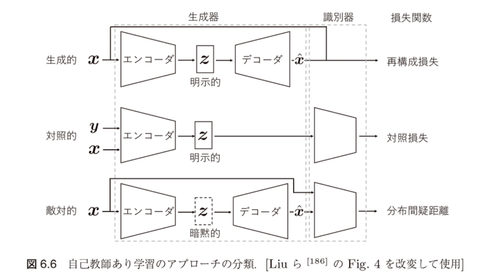
自己教師あり学習におけるニューラルネットワークの構造
自己教師あり学習におけるニューラルネットワークの構造は一般に生成器と識別器の二つの部分から構成されると考えることができ、生成器はさらにエンコーダとデコーダに分解されます。それぞれのアプローチにおける主な違いは、以下の通りです。
各アプローチの特徴
- 潜在表現 $\mathbf{z}$ の扱い：生成的アプローチと対照的アプローチでは明示的であり、しばしばダウンストリームタスクで利用されます。一方、敵対的アプローチでは暗黙的にモデル化されます。
- 識別器の設定：対照的アプローチと敵対的アプローチが識別器を持つのに対して、生成的アプローチは識別器を持ちません。対照的アプローチでは、識別器として2-3層のパーセプトロンなどの小規模なモデルが用いられるのに対して、敵対的アプローチでは標準的なResNetなど比較的規模の大きいモデルが用いられます。
- 損失関数：生成的アプローチでは再構成損失を、対照的アプローチでは対照損失と呼ばれる類似度の指標を、敵対的アプローチでは分布間の距離尺度をそれぞれ損失関数として学習が行われます。
対照学習（Contrastive Learning）
本書では、特に対照的アプローチである対照学習（contrastive learning）について詳しく説明します。生成的アプローチや敵対的アプローチについては、例えば Liu らのサーベイ [186] を参照してください。
機械学習のモデルは、それが近似しようとしている確率分布の観点から生成モデルと識別モデルに大別されます。
生成モデル（Generative Model）
- 従来：同時分布 $P_{X,Y}$ を近似する問題を考えるアプローチ
- 近年の深層生成モデル：特に入力の分布 $P_X$ や $P_{X|Y}$ を近似する問題
- データの生成過程をモデル化し、新しいデータを生成することが可能
識別モデル（Discriminative Model）
- 入力を与えたときの出力の条件付き分布 $P_{Y|X}$ を近似する問題
- データを分類や回帰などのタスクに応じて識別することに特化
対照学習では、識別モデル的な観点から表現学習を行う
対照学習の分類
対照学習は、さらに文脈-事例対比型と事例-事例対比型の2種類に分類することができます。以下ではそれぞれについて、いくつかの主要な方法を取り上げつつ説明します。
文脈-事例対比型（Context-Instance Contrastive）
入力データの文脈情報と個別の事例を対比させる手法
事例-事例対比型（Instance-Instance Contrastive）
異なる事例同士を直接対比させる手法
6.2.3.2 文脈-事例対比型の対照的自己教師あり学習
文脈-事例対比型の対照的自己教師あり学習
基本概念
文脈-事例対比型の対照学習は、各事例が表す局所的特徴とその大域的文脈表現の間の帰属関係をモデル化することに主眼がおかれています。
具体例
ある局所的な特徴の表現を学習するとき：
- 画像の縞模様 → 虎
- 文章 → その段落
- グラフのノード → その近傍
というような大域的文脈の特徴表現と関連していることが望ましいと考えられます。
手法の詳細
文脈-事例対比型の対照学習には、主に相対位置の予測（predict relative position, PRP）による方法と相互情報量（mutual information, MI）の最大化による方法があります。
PRP による方法
局所的特徴の間の相対位置関係を学習することに重点をおいており、大域的文脈はこの関係を予測するための暗黙的な要請として機能します。例えば、猫という動物の外見の特徴（大域的文脈）は、頭と尻尾（局所的特徴）の相対的な位置の予測に重要な概念となっています。
MI による方法
局所的特徴間の相対的位置関係は無視され、各局所的特徴の大域的文脈への帰属関係を学習することを目的とします。
相対位置の予測（PRP）
PRPの特徴
- 局所的特徴の間の相対的位置関係を学習することに重点
- 大域的文脈はこの関係を予測するための暗黙的な要請として機能
MIとの違い
一方 MI による方法では、局所的特徴間の相対的位置関係は無視され、各局所的特徴の大域的文脈への帰属関係を学習することを目的とします。
データの関係性
多くのデータは、空間的な関係や時系列的な関係を含みます。
例えば、正面を向いて立っている人間の全身画像があれば、頭は胴体より上部に位置しているでしょう。
また、"Nice to meet you." という文章は、"Nice to meet you, too." という文章よりも前にある可能性が高いでしょう。
さまざまなモデルが、このようなデータに含まれる相対位置の認識を事前学習タスクとして捉えています [152]。
PRPの具体的なタスク
主要なタスク例
- 各事例から切り出した二つのパッチの相対位置を予測する問題 [81]
- 画像を並び替えたセグメントの位置を復元するジグソーパズルを解く問題 [217]
- 回転した画像の回転角を推定する問題 [107]
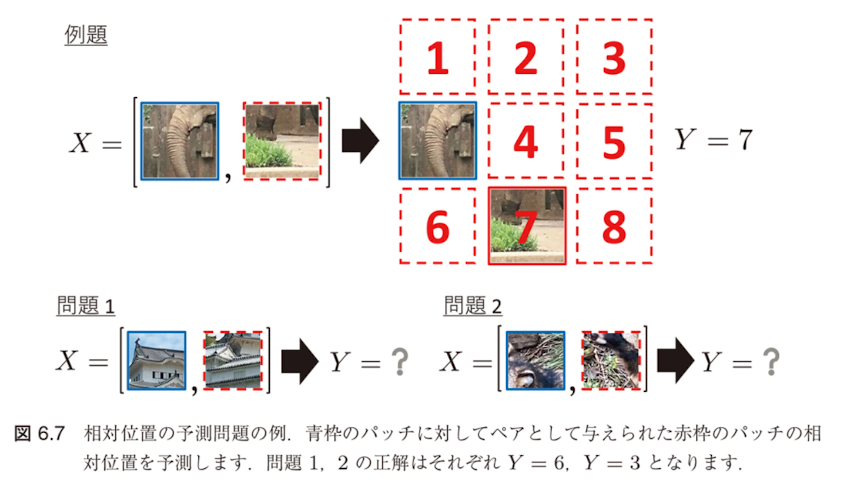
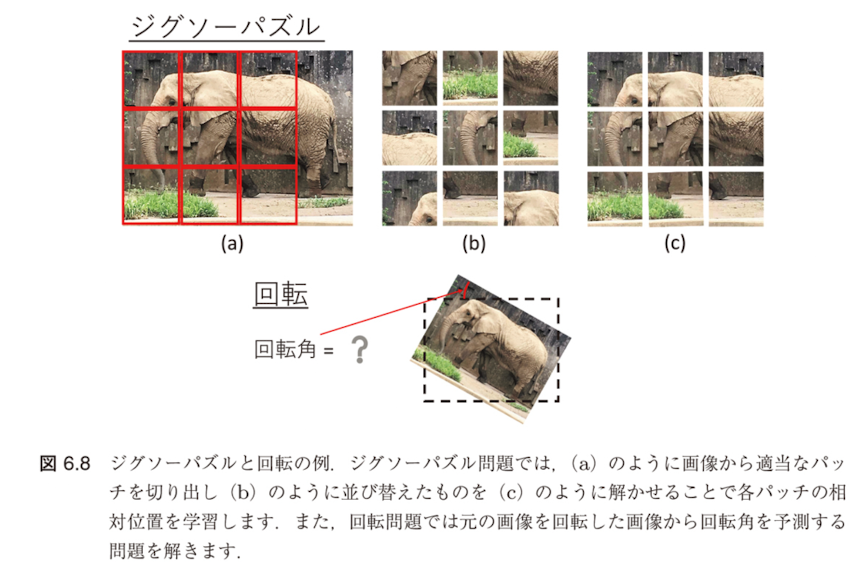
自然言語処理における事例：BERT
Next Sentence Prediction (NSP)
自然言語処理における言語モデル BERT[77] の事前学習では、PRP に類似したアイデアとして next sentence prediction (NSP) という学習方法が採用されています。
NSPの仕組み
これは、ある文に対して、次の文とランダムにサンプリングされた文を区別するようにモデルを訓練する方法です。
NSPの問題点と発展
しかし、その後の研究で NSP はむしろ性能を低下させる可能性のある事前学習法であることが実験的に示唆されたため、後続のモデルである RoBERTa[187] では NSP の損失が取り除かれています。
相互情報量（MI）の最大化
相互情報量の定義
相互情報量（mutual information）は二つの確率変数 $X$ と $Z$ の間の関連性のモデルであり、以下のように定義されます。
$$I(X; Z) = \int \int p(x, z) \log \frac{p(x, z)}{p(x)p(z)} dx dz \quad (6.3)$$
相互情報量最大化の問題設定
相互情報量最大化のアプローチでは、次のような特徴量の間の相互情報量最大化問題を考えます。
$$\max_{h_{\text{enc}}^{(1)}, h_{\text{enc}}^{(2)} \in \mathcal{H}} I(h_{\text{enc}}^{(1)}(X); h_{\text{enc}}^{(2)}(X)) \quad (6.4)$$
ここで、$h_{\text{enc}}^{(i)}$ は特徴抽出を行うエンコーダであり、$\mathcal{H}$ はエンコーダを表す適当なクラスの関数集合です。
Deep InfoMax (DIM)
DIMの概要
Deep InfoMax (DIM) [129] は画像の局所的なパッチと大域的文脈（すなわち画像の内容）の間の相互情報量を最大化する対照学習タスクを通して自己教師あり学習を行う方法です。
DIMの仕組み
いま、$h_{\text{enc}}(\mathbf{x}; \boldsymbol{\theta})$ を入力画像 $\mathbf{x}$ を特徴ベクトル $\mathbf{z}$ に変換するエンコーダとし、$\boldsymbol{\theta}$ をそのパラメータとします。
- 特に $h_{\text{enc}}$ は、入力 $\mathbf{x}$ に対して $M \times M$ 特徴マップを対応させる関数 $h_1$ と
- 得られた特徴マップを一つの特徴ベクトルに集約する関数 $h_2$ の合成関数 $h_{\text{enc}} = h_2 \circ h_1$ で表されるとします
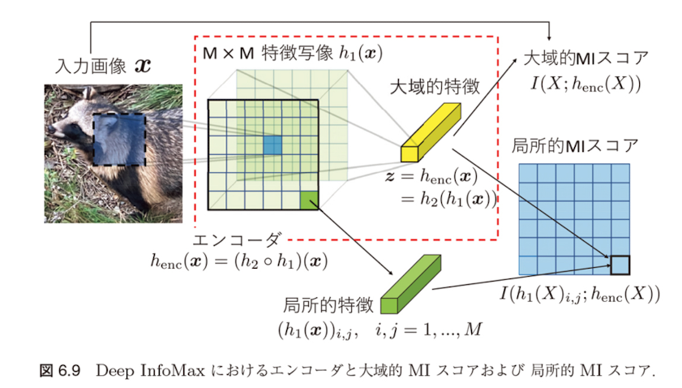
DIMの目的関数
2種類の相互情報量
このとき、DIM では入力画像とエンコードされた特徴量の間の相互情報量（大域的 MI スコア）$I(X; h_{\text{enc}}(X; \boldsymbol{\theta}))$ と、$h_1$ で得られた特徴マップの各成分 $(h_1(X; \boldsymbol{\theta}))_{i,j}$、$i, j = 1, \ldots, M$ とエンコードされた特徴量の間の相互情報量（局所的 MI スコア）$I(h_1(X; \boldsymbol{\theta})_{i,j}; h_{\text{enc}}(X; \boldsymbol{\theta}))$ という2種類の相互情報量を考えます。
重み付き和の目的関数
$$J(\boldsymbol{\theta}) = \alpha_1 I(X; h_{\text{enc}}(X; \boldsymbol{\theta})) + \frac{\alpha_2}{M^2} \sum_{i,j=1}^M I(h_1(X; \boldsymbol{\theta})_{i,j}; h_{\text{enc}}(X; \boldsymbol{\theta})) \quad (6.5)$$
を最大にするように特徴抽出器であるエンコーダのパラメータ $\boldsymbol{\theta}$ を学習します。
ここで、(6.5) の右辺第2項はすべての $h_1(X; \boldsymbol{\theta})_{i,j}$ に対する局所的 MI スコアの平均をとったものです。
相互情報量の推定
推定の必要性
(6.5) の $J(\boldsymbol{\theta})$ を最大化するためには、相互情報量を推定する必要があります。
KLダイバージェンスによる表現
DIM では、一般に二つの確率変数 $X$ と $Z$ の相互情報量 $I(X; Z)$ が
$$I(X; Z) = D_{\text{KL}}(P_{X,Z} \| P_X P_Z) \quad (6.6)$$
と書けることを利用してこれを推定します。ここで、右辺は $X$ と $Z$ の同時分布 $P_{X,Z}$ と周辺分布の積 $P_X P_Z$ の間の KL ダイバージェンスです。
Donsker-Varadhan表現
(6.6) の右辺の $D_{\text{KL}}(P_{X,Z} \| P_X P_Z)$ は、KL ダイバージェンスの Donsker-Varadhan 表現 [82] によってさらに
$$D_{\text{KL}}(P_{X,Z} \| P_X P_Z) = \sup_{g: X \times Z \to \mathbb{R}} \mathbb{E}_{(X,Z) \sim P_{X,Z}}[g(X, Z)] - \log \mathbb{E}_{(X,Z) \sim P_X P_Z}[e^{g(X,Z)}] \quad (6.7)$$
と書くことができます。
MINE（相互情報量ニューラル推定）
MINEの概要
(6.7) の右辺で sup を外した量は $D_{\text{KL}}(P_{X,Z} \| P_X P_Z)$ の下界を与えます。$g$ は適当な実数値関数ですが、例えばパラメータ $\mathbf{w}$ を持つニューラルネットワーク $g(\mathbf{x}, \mathbf{z}; \mathbf{w})$ を用いる方法（mutual Information neural estimation, MINE）[30] などが提案されています。
相互情報量の推定量
この場合、相互情報量の推定量 $\hat{I}_{\mathbf{w}}$ を
$$\hat{I}_{\mathbf{w}}(X; Z) = \mathbb{E}_{(X,Z) \sim P_{X,Z}}[g(X, Z; \mathbf{w})] - \log \mathbb{E}_{(X,Z) \sim P_X P_Z}[e^{g(X,Z;\mathbf{w})}] \quad (6.8)$$
で定義し、(6.5) の目的関数は
$$J(\boldsymbol{\theta}, \mathbf{w}) = \alpha_1 \hat{I}_{\mathbf{w}}(X; h_{\text{enc}}(X; \boldsymbol{\theta})) + \frac{\alpha_2}{M^2} \sum_{i,j=1}^M \hat{I}_{\mathbf{w}}(h_1(X; \boldsymbol{\theta})_{i,j}; h_{\text{enc}}(X; \boldsymbol{\theta})) \quad (6.9)$$
となります。
DIMの発展とその他の手法
DIMとは単独して提案されたcontrastive predictive coding (CPC)
DIM とは単独して提案された contrastive predictive coding (CPC) [218] でも、DIM と同様に相互情報量の最大化によるアプローチを採用しています。
Augmented Multiscale DIM (AMDIM)
DIM がすべての局所的特徴を集約して一つの大域的特徴を構築するのに対して、CPC では局所的特徴の一部を用いて「現在特徴」という表現を構築した局所的特徴間の相互情報量を最大化することによりスケールを統一的に表現されています。
また、DIM を拡張した Augmented Multiscale DIM (AMDIM) [22] では、各入力画像に対して独立にデータ拡張を施したものから抽出した局所的特徴間の相互情報量を最大化することによりスケールとより堅実した学習特徴の獲得が可能となるように訓練されています。
6.2.3.3 事例-事例対比型の対照的自己教師あり学習
事例-事例対比型の対照的自己教師あり学習
基本概念
事例-事例対比型の対照学習は、距離学習と同様に異なるサンプルの事例レベルの局所的特徴表現の間の関係を直接学習するものです。
距離学習（Metric Learning）との関係
距離学習（metric learning）とは、アンカー点 $\mathbf{x}$ と正例 $\mathbf{x}^+$ および負例 $\mathbf{x}^-$ という三つの組のデータが与えられたとき、$h_{\text{enc}}(\mathbf{x})$ と $h_{\text{enc}}(\mathbf{x}^+)$ の間の距離が $h_{\text{enc}}(\mathbf{x})$ と $h_{\text{enc}}(\mathbf{x}^-)$ の間の距離よりも小さくなるように特徴抽出器 $h_{\text{enc}}$ を学習する問題です。
学習の目的
事例-事例対比型の対照学習は、類似した事例同士は特徴空間で近く、異なる事例同士は遠くに配置されるような特徴表現を学習することを目的とします。これにより、データの意味的な類似性を反映した効果的な表現を獲得できます。
ノイズ対照推定（NCE）
NCEの概要
ノイズ対照推定（Noise Contrastive Estimation, NCE） [119] は、事例-事例対比型の対照学習の基礎となる推定手法です。
NCEの基本定式化
$$\mathcal{L}_{\text{NCE}}(h_{\text{enc}}) = \mathbb{E}_{\mathbf{x}, \mathbf{x}^+, \mathbf{x}^-} \left[ - \log \frac{e^{h_{\text{enc}}(\mathbf{x})^\top h_{\text{enc}}(\mathbf{x}^+)}}{e^{h_{\text{enc}}(\mathbf{x})^\top h_{\text{enc}}(\mathbf{x}^+)} + e^{h_{\text{enc}}(\mathbf{x})^\top h_{\text{enc}}(\mathbf{x}^-)}} \right] \quad (6.10)$$
記号の説明
- $\mathbf{x}^+$ はアンカー点 $\mathbf{x}$ と「似ている」入力（正例）
- $\mathbf{x}^-$ は $\mathbf{x}$ と「似ていない」入力（負例）
- タスクに応じて類似度の指標やエンコーダの構造は異なる
- NCE というフレームワークは共通している
NCEの直感的理解
NCEは、正例（類似サンプル）に対する特徴表現の内積を大きくし、負例（非類似サンプル）に対する特徴表現の内積を小さくするように学習を行います。これにより、意味的に近いデータが特徴空間でも近くに配置されるようになります。
InfoNCEへの拡張
$\mathbf{x}$ に対して $K$ 個の非類似事例 $\mathbf{x}^{1-}, \ldots, \mathbf{x}^{K-}$ が利用できる場合、NCE の損失関数を拡張した
$$\mathcal{L}_{\text{InfoNCE}}(h_{\text{enc}}) = \mathbb{E}_{\mathbf{x}, \mathbf{x}^+, \mathbf{x}^K} \left[ - \log \frac{e^{h_{\text{enc}}(\mathbf{x})^\top h_{\text{enc}}(\mathbf{x}^+)}}{e^{h_{\text{enc}}(\mathbf{x})^\top h_{\text{enc}}(\mathbf{x}^+)} + \sum_{k=1}^K e^{h_{\text{enc}}(\mathbf{x})^\top h_{\text{enc}}(\mathbf{x}^{k-})}} \right] \quad (6.11)$$
を最小化する InfoNCE が提案されています [218]。
教師あり学習と自己教師あり学習における正例・負例の定義
教師あり学習の場合
- 通常、正例 $\mathbf{x}^+$ はアンカー点 $\mathbf{x}$ と同一のクラスからサンプリング
- 負例 $\mathbf{x}^-$ は $\mathbf{x}$ とは異なるクラスからサンプリング
自己教師あり学習の場合
アンカー点 $\mathbf{x}$ に対して $\mathbf{x}^+$ と $\mathbf{x}^-$ のとり方は自明ではありません。
NCEでよく用いられる方法
NCE でよく用いられるのは、アンカー点となる入力画像をデータ拡張した画像を正例、アンカー点と異なる画像をデータ拡張した画像を負例とする方法です。
最近の発展
最近では、momentum contrast (MoCo) [123] や SimCLR[59] など、文脈-事例対比型のアプローチを凌駕し、通常の教師あり学習に匹敵する性能を達成するような事例-事例対比型の対照学習の方法が提案されています。
MoCo（Momentum Contrast）
MoCoの全体像
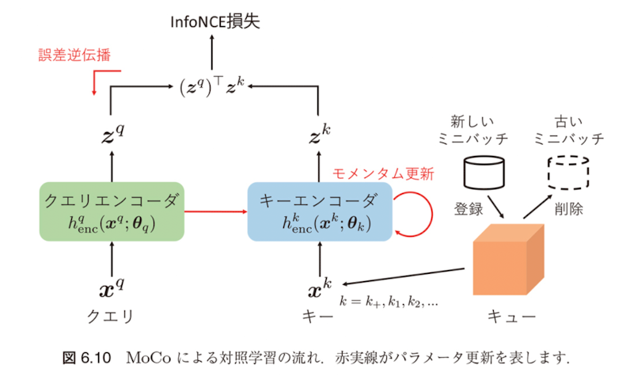
MoCoの基本アイデア
MoCo ではアンカー点をクエリ（query）、対比する正例や負例をキー（key）と呼び、それぞれ $\mathbf{x}^q$ および $\mathbf{x}^{k+}, \mathbf{x}^{k1}, \mathbf{x}^{k2}, \ldots$ と表します。
ここで、$\mathbf{x}^{k+}$ はクエリ $\mathbf{x}^q$ に対する正例、$\mathbf{x}^{k1}, \mathbf{x}^{k2}, \ldots$ は $\mathbf{x}^q$ に対する負例を表します。
エンコーダによる特徴表現の生成
クエリとキーはそれぞれクエリエンコーダ $h_q^{\text{enc}}$ とキーエンコーダ $h_k^{\text{enc}}$ によって潜在表現に埋め込まれます：
- $\mathbf{z}^q = h_q^{\text{enc}}(\mathbf{x}^q; \boldsymbol{\theta}_q)$ （クエリの特徴表現）
- $\mathbf{z}^{k+} = h_k^{\text{enc}}(\mathbf{x}^{k+}; \boldsymbol{\theta}_k)$ （正例キーの特徴表現）
- $\mathbf{z}^{k1}, \mathbf{z}^{k2}, \ldots$ （負例キーの特徴表現）
MoCoの損失関数
$$\mathcal{L}(\boldsymbol{\theta}_q, \boldsymbol{\theta}_k) = - \log \frac{e^{(\mathbf{z}^q)^\top \mathbf{z}^{k+}/\tau}}{e^{(\mathbf{z}^q)^\top \mathbf{z}^{k+}/\tau} + \sum_{k \neq k+} e^{(\mathbf{z}^q)^\top \mathbf{z}^k/\tau}} \quad (6.12)$$
ここで、$\boldsymbol{\theta}_q, \boldsymbol{\theta}_k$ はそれぞれクエリエンコーダとキーエンコーダのパラメータであり、$\tau$ は温度を表すハイパーパラメータです。
MoCoの解釈
この損失は、クラス数がキーの数であるような多クラス分類問題において、クエリ $\mathbf{x}^q$ が正例 $\mathbf{x}^{k+}$ と同じクラスに分類されるソフトマックス確率の対数をとったものになっていると解釈することができます。
MoCoのキュー形式処理とモメンタム更新
MoCoの全体像
キュー形式での効率化
Mocoでは、キーとなる事例の数が多いほど複雑な画像の空間をよりよく表現できるようになると考えられます。
そのため、キーベクトルの集合である辞書をキュー（queue）形式で処理することを提案しています。各反復において、現在のミニバッチはキューに登録され、最も古いミニバッチはキューから削除されます。
利点
- 直前のミニバッチからエンコードされたキーを再利用できる
- 最新のキーと古いキーの不整合を防ぐことができる
- 辞書のサイズとミニバッチのサイズが切り離され、ミニバッチサイズよりも大きいサイズの辞書を持つことができる
モメンタム更新
キュー形式にすることで辞書サイズを大きくすることができる一方で、誤差逆伝播によるパラメータ更新のコストが大きくなるという課題があります。
そこで MoCo では、誤差逆伝播ではクエリエンコーダのパラメータ $\boldsymbol{\theta}_q$ のみを更新し、キーエンコーダのパラメータ $\boldsymbol{\theta}_k$ は以下のようにモメンタム更新します。
$$\boldsymbol{\theta}_k = m\boldsymbol{\theta}_k + (1 - m)\boldsymbol{\theta}_q \quad (6.13)$$
ここで、$m \in [0, 1)$ はモメンタム係数です。
MoCoの効果とメリット
MoCoの全体像
モメンタム更新の効果
モメンタム更新によって、キーエンコーダはクエリエンコーダに比べて緩やかに更新が行われます。その結果、キューに格納された異なるミニバッチ由来のキーはそれぞれ異なるエンコーダで埋め込まれてはいますが、エンコーダ間の差を小さくすることができます。
推奨設定
実験的には、大きいモメンタム係数（MoCo のデフォルトは $m = 0.999$）、すなわちよりキーエンコーダの更新が緩やかになるような設定がよいことが報告されています。
$$\boldsymbol{\theta}_k = m\boldsymbol{\theta}_k + (1 - m)\boldsymbol{\theta}_q \quad (6.13)$$
SimCLR（Simple Framework for Contrastive Learning）
SimCLRの基本アイデア
SimCLR（a simple framework for contrastive learning of visual representation）では、MoCo のように異なる画像を対比するのではなく、同一画像に対して異なるデータ拡張を施したものを対比します。
SimCLRの手順
- $\mathcal{T}$ を適当なデータ拡張のクラスとし、入力画像 $\mathbf{x}$ に対して $\mathcal{T}$ の異なるデータ拡張操作 $t, t' \in \mathcal{T}$ を施したものをそれぞれ $\tilde{\mathbf{x}} = t(\mathbf{x}), \tilde{\mathbf{x}}' = t'(\mathbf{x})$ とおきます
- 各反復では、ランダムにサンプリングされたサイズ $n$ のミニバッチの各事例に対して2種類のデータ拡張を施し、$2n$ 個のデータを得ます
- SimCLR では負例に対応する事例を直接サンプリングすることはせず、アンカー点に対して正例となる1点を除いた残りの $2(n-1)$ 点を負例として扱います
MoCoとの違い
- MoCo ではクエリとキーそれぞれに個別のエンコーダを用意
- SimCLR では単一のエンコーダ $h_{\text{enc}}$ によっておよび $\tilde{\mathbf{x}}, \tilde{\mathbf{x}}'$ を $\mathbf{h} = h_{\text{enc}}(\tilde{\mathbf{x}}; \boldsymbol{\theta}_{\text{enc}}), \mathbf{h}' = h_{\text{enc}}(\tilde{\mathbf{x}}'; \boldsymbol{\theta}_{\text{enc}})$ で特徴表現し、$\mathbf{h}, \mathbf{h}'$ に変換します
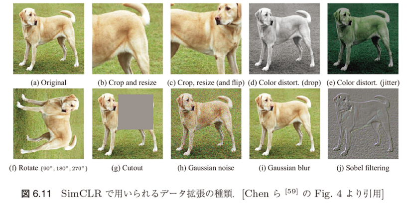
SimCLRとMoCoの詳細比較
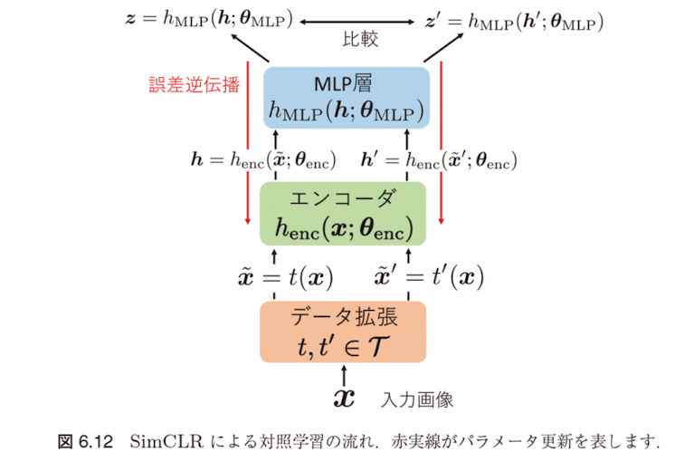
SimCLRの特徴：追加のMLP層
SimCLRの特徴は、エンコーダの出力 $\mathbf{h}, \mathbf{h}'$ を直接比較するのではなく、追加のMLP層を通して変換した特徴表現を比較する点です：
(中間層が1層のMLP?Multi Layer?)
SimCLRの処理フロー：
- 入力画像 $\mathbf{x}$ にデータ拡張を適用： $\tilde{\mathbf{x}}, \tilde{\mathbf{x}}'$
- エンコーダで特徴抽出： $\mathbf{h} = h_{\text{enc}}(\tilde{\mathbf{x}}), \mathbf{h}' = h_{\text{enc}}(\tilde{\mathbf{x}}')$
- MLP層で変換： $\mathbf{z} = h_{\text{MLP}}(\mathbf{h}), \mathbf{z}' = h_{\text{MLP}}(\mathbf{h}')$
- 変換後の特徴 $\mathbf{z}, \mathbf{z}'$ で対照損失を計算
MLP層の効果
なぜMLP層が有効なのか？
- MLP層はデータ拡張に対して不変な特徴を学習する
- 対照学習では拡張された画像ペアを「類似」として扱うため、拡張に関連する情報（色調、回転角など）は除去される
- しかし、これらの情報は下流タスクには有用な場合がある
- MLP層により、対照学習用の表現と下流タスク用の表現を分離できる
SimCLRの損失関数と学習手順
SimCLRの対照損失
SimCLR の対照損失は、二つの潜在表現 $\mathbf{z}$ と $\mathbf{z}'$ の類似度を正規化した内積 $\text{sim}(\mathbf{z}, \mathbf{z}') = \mathbf{z}^\top \mathbf{z}' / \| \mathbf{z} \| \| \mathbf{z}' \|$ で定義したもとで、InfoNCE 損失
$$\mathcal{L}_{i,j}(\boldsymbol{\theta}_{\text{enc}}, \mathbf{W}^{(1)}, \mathbf{W}^{(2)}) = - \log \frac{e^{\text{sim}(\mathbf{z}_i, \mathbf{z}_j)/\tau}}{\sum_{k=1}^{2N} \mathbb{1}[k \neq i] e^{\text{sim}(\mathbf{z}_i, \mathbf{z}_k)/\tau}} \quad (6.14)$$
として定義されます。
記号の説明
- $\mathbb{1}[A]$ は $A$ が真のとき1を返す指示関数
- $\tau$ は MoCo の損失に現れるものと同様の温度パラメータ
- (6.14) のデータに関する平均をとったものを最小化するように、エンコーダのパラメータ $\boldsymbol{\theta}_{\text{enc}}$ と MLP のパラメータ $\mathbf{W}^{(1)}, \mathbf{W}^{(2)}$ を更新
学習の違い
MoCo では誤差逆伝播による勾配法とモメンタム更新を組み合わせて用いていましたが、SimCLR ではネットワークは一つであるため、すべてのパラメータは誤差逆伝播による勾配法で更新されます。
6.2.4 事前学習済みモデルの転移可能性
事前学習済みモデルの転移可能性
自己教師あり学習の限界
6.2.3節で説明した自己教師あり学習は、基本的に単一ドメインにおけるニューラルネットワークの学習を教師なしでどのように実現するかという点に注目しています。
重要な課題
得られた事前学習済みモデルを目標ドメインに転移したときによい性能を示すことは必ずしも保証されません。
実験的証拠
例えば、Huang ら [141] は、さまざまなアーキテクチャの事前学習済みモデルを同じ目標ドメインへ転移したときの精度が大きく異なりうることを実験的に示しました。
層別転移の影響
彼らはまた、ある事前学習済みモデルの異なる層を転移したときの目標ドメインの精度にも差が生じうることを示しています。
ニューラルネットワークの層別転移特性
上層と下層の特性の違い
特に後者の現象は、ニューラルネットワークの上層がタスク固有のパターンをより多くエンコードするため元ドメインのタスクに特化したモデルになりやすい一方で、下層は汎用的な特徴抽出を司るためより転移しやすいという定性的な解釈を与えることができます。
中心的な問題
「どの事前学習済みモデルのどの層を転移すれば目標ドメインのタスクの性能を最大化できるのか」という点です。
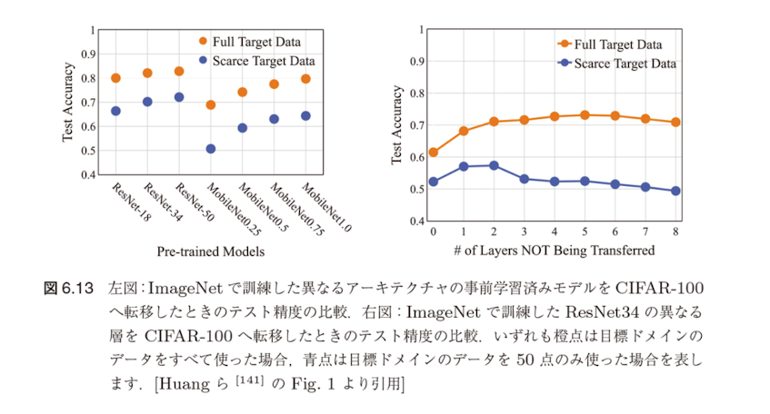
Taskonomy：タスク間転移可能性の体系的評価
Taskonomyの概要
事前学習済みモデルを目標ドメインへ転移したときの性能を評価する試みはこれまで多数行われてきています。例えば Taskonomy[335] では、26 種類の画像関連タスクに対してすべての組合せで網羅的に事前学習済みモデルの転移学習を実行し、親和性の高いタスクのペアを見つけることを試みています。
Taskonomyの手順
- タスク固有モデリング：あるタスクを目標ドメインとして固定し、残りのタスクを元ドメインとしてシンプルな教師あり学習を行い、各タスク固有のモデルを訓練
- 転移モデリング：学習済みの特徴抽出器を固定して目標ドメインのデータで教師あり学習を行い、転移モデル $h_{S \to T}$ を訓練
- タスクアフィニティ正規化：これらのモデルを用いて、タスク間の転移可能性に関する親和性スコア行列を構成
- 計算タクソノミー：最後に、タスク間の転移可能性の関係性を、タスクをノード、転移の可否をエッジとする部分グラフとして表現
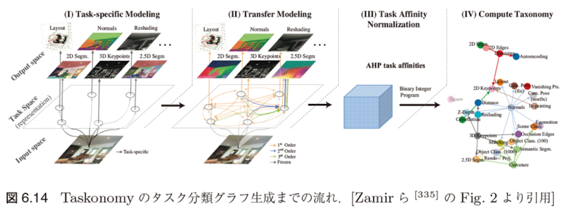
タスク間親和性スコアの計算
親和性スコア行列の構成
具体的には、目標ドメイン $T$ について、$T$ への転移が可能なすべての元ドメインの間の一対比較行列 $\mathbf{W}_T$ を構築します。$\mathbf{W}_T$ の $(i, j)$ 成分 $W_{T_{i,j}}$ は、$i$ 番目の元ドメイン $S_i$ が $j$ 番目の元ドメイン $S_j$ よりも転移モデルの性能が高かったテストデータの画像の割合を表します。
$$W_{T_{i,j}} = \frac{\mathbb{E}_{(\mathbf{x}, y) \in D_{\text{test}}}[\ell(h_{S_i \to T}(\mathbf{x}), y) < \ell(h_{S_j \to T}(\mathbf{x}), y)]}{\mathbb{E}_{(\mathbf{x}, y) \in D_{\text{test}}}[\ell(h_{S_i \to T}(\mathbf{x}), y) > \ell(h_{S_j \to T}(\mathbf{x}), y)]} \quad (6.15)$$
ここで、$\ell$ は目標ドメインにおけるタスクの損失関数を表します。(多分 指示関数 $\mathbb{1}$ が抜けてる。)
部分グラフの構築
最後に、タスク間の転移可能性の関係性を、タスクをノード、転移の可否をエッジとする部分グラフとして表現します。この部分グラフの構成は、適当な制約条件の下で元ドメインであるタスクから目標ドメインであるタスクへの最適なエッジを選択する問題であり、0-1 整数計画問題として定式化し解くことができます。
Task2Vec：タスク埋め込みによる転移可能性評価
Task2Vecの目的と基本アイデア
目的： 異なるタスク間の転移学習の効果を事前に予測するため、各タスクをベクトル表現に埋め込む手法
Task2Vec では、ImageNetで事前学習されたニューラルネットワークを probe network として固定し、各タスクの特性をフィッシャー情報行列で特徴づけます。
核心的アイデア
- 固定されたprobe networkを使って各タスクの重要なパラメータを特定
- フィッシャー情報行列により、各パラメータがタスク性能にどれだけ重要かを測定
- この情報からタスクベクトルを作成し、タスク間の類似度を計算
Task2Vecの手順
- probe network に分類層を結合し、目標ドメインで分類層のみを学習したネットワークが表現する出力の条件付き確率を $p_{\mathbf{w}}(y|\mathbf{x})$ と書きます
- $\mathbf{w}$ は目標ドメインでのニューラルネットのモデルパラメータです
- $\mathbf{w}$ を摂動させたパラメータ値 $\mathbf{w}' = \mathbf{w} + \delta \mathbf{w}$ における条件付き確率 $p_{\mathbf{w}'}(y|\mathbf{x})$ と $p_{\mathbf{w}}(y|\mathbf{x})$ の間の KL ダイバージェンス
$$\mathbb{E}_{\mathbf{x} \sim \hat{p}(\mathbf{x})}[D_{\text{KL}}(p_{\mathbf{w}'}(y|\mathbf{x})||p_{\mathbf{w}}(y|\mathbf{x}))] \quad (6.16)$$
によって事前学習したタスクに対する学習済みの重み $\mathbf{w}$ の重要性を測ります。
解釈
ここで、$\hat{p}(\mathbf{x})$ は入力 $\mathbf{x}$ の経験分布を表します。もし (6.16) の値が大きい、すなわち $p_{\mathbf{w}'}(y|\mathbf{x})$ と $p_{\mathbf{w}}(y|\mathbf{x})$ が大きく異なるならば、当該タスクはパラメータ $\mathbf{w}$ に大きく依存していると解釈することができます。
フィッシャー情報行列による近似
2次近似
(6.16) は、以下のように2次近似できます：
$$\mathbb{E}_{\mathbf{x} \sim P_X}[D_{\text{KL}}(p_{\mathbf{w}'}(y|\mathbf{x})||p_{\mathbf{w}}(y|\mathbf{x}))] = \delta \mathbf{w} + \delta \mathbf{F} \mathbf{w} + o(\delta \mathbf{w}^2) \quad (6.17)$$
フィッシャー情報行列
$$\mathbf{F} = \mathbb{E}_{(\mathbf{x}, y) \sim \hat{p}_{\mathbf{w}}(\mathbf{x}, y)}[\nabla_{\mathbf{w}} \log p_{\mathbf{w}}(y|\mathbf{x})(\nabla_{\mathbf{w}} \log p_{\mathbf{w}}(y|\mathbf{x}))^\top] \quad (6.18)$$
は同時分布 $\hat{p}_{\mathbf{w}}(\mathbf{x}, y) = \hat{p}(\mathbf{x})p_{\mathbf{w}}(y|\mathbf{x})$ のもとでのフィッシャー情報行列であり、$\mathbf{F}$ のある成分の値が小さいならば、事前学習タスクは対応するパラメータに強く依存していないとみなすことができます。
Task2Vecの利点
一般に、異なる構造のニューラルネットの間でフィッシャー情報行列を比較することはできませんが、Task2Vec では probe network という一つの特徴抽出器をすべての転移シナリオで使うことでタスク間の比較を可能にしています。
Task2Vecの計算効率化と応用
計算上の課題
一方、フィッシャー情報行列を計算するにはすべてのパラメータに対する $p_{\mathbf{w}}(y|\mathbf{x})$ の微分を計算しなければならないため、膨大な計算量がかかるという問題があります。
Task2Vecの効率化手法
フィッシャー情報行列の計算を効率化するため、Task2Vecでは以下の手順を取ります：
効率化のステップ
- 対角成分のみを計算： フィッシャー情報行列 $\mathbf{F}$ の対角成分のみを取り出す
- フィルタ単位で集約： 畳み込み層の各フィルタ内のすべての重みパラメータについて平均を取る
- タスク埋め込み生成： probe networkのフィルタ数と同じ長さのタスクベクトルを得る
フィルタとは： 畳み込みニューラルネットワーク（CNN）において、各畳み込み層は複数のフィルタ（カーネル）から構成されます。各フィルタは特定の視覚的特徴（エッジ、テクスチャ、形状など）を検出する役割を持ちます。Task2Vecでは、各フィルタがどのタスクで重要かを測定し、それをタスクの特徴として使用します。
効率化の仮定
- probe network 内の異なるフィルタ間には相関がない
- 各フィルタ内の重みパラメータは独立ではない（同一フィルタ内では相関がある）
Task2Vecの利点と結果
- 計算効率： 従来手法より大幅に高速
- 予測精度： 実際の転移学習性能と高い相関
- 汎用性： 異なるドメイン（視覚、言語など）のタスクも同一空間で比較可能
- 事前予測： 実際に転移学習を試す前に効果的なタスクペアを特定可能
タスク間類似度の評価
最後に得られたタスク埋め込みベクトル間のコサイン類似度などを測ることで、タスク間類似度の評価値を得ます。Task2Vec で得られた埋め込みベクトルを可視化した例を図6.15に示します。
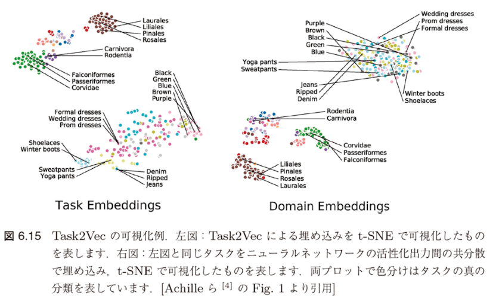
転移可能性評価手法の総括
その他の転移可能性評価手法
類似グラフに基づく手法
- RSA（Representational Similarity Analysis）: 各タスクの事例間類似グラフを構築し、グラフ間類似度で転移可能性を評価
- DEPARA: 事前学習済みモデルの表現に基づくタスク間グラフ類似度を指標として使用
これらの手法は目標ドメインでのファインチューニングが必要で、計算コストが高い
計算効率を重視した手法
データ分布に基づく手法
- Cui ら [66]: 元ドメインと目標ドメインの特徴間のワッサースタイン距離をドメイン類似度として使用
- NCE score [289]: 判別問題において、ラベル間の負の条件付きエントロピーで転移可能性を推定
元ドメインのデータが必要で、適用範囲が制限される
事前学習済み特徴抽出器のみを使用する手法
転移可能性評価の現状と課題
現在の状況
現在までにさまざまな観点で事前学習済みモデルの転移可能性を評価する方法が提案されていますが、まだ決定的なアプローチや指標は見つかっていません。
各手法の特徴と課題
| 手法カテゴリ |
利点 |
課題 |
| Taskonomy, Task2Vec |
体系的評価、高い予測精度 |
計算コスト、汎用性 |
| RSA, DEPARA |
詳細な類似度分析 |
ファインチューニング必須 |
| 分布距離ベース |
計算効率、理論的根拠 |
元ドメインデータ必要 |
| 尤度ベース |
元データ不要、高速 |
精度の限界 |
実践的な指針
実践的には、各ドメインに固有の知識をも使いながら丁寧にドメイン間の類似度を評価して転移の可否を判断するといったことが求められるでしょう。この方向の研究の発展は今後も続くと思われます。
6.2.5 基盤モデル
基盤モデル（Foundation Model）とは
基盤モデル（foundation model）とは、広範なデータで学習され下流の幅広いタスクに知識を転移させることができるモデルを指します。
代表的な基盤モデル
- GPT-4 [46]
- PaLM2 [14]
- LLaMA [288]
技術的基盤
基盤モデルの構築方法は深層ニューラルネットワークと自己教師あり学習に基づいており、その技術は決して新しいものではありません。
基盤モデル実現を可能にした3つの要因
近年になって基盤モデルが実現され始めたのは、学習に関するいくつかの要因のスケールが大幅に増大したことによります。
● コンピュータハードウェア
例えば、GPUのスループットとメモリの性能はここ数年で大幅に上昇しました。
● モデル性能
モデルのパラメータサイズの上昇とともに、以前よりもはるかに表現力の高いモデルを訓練できるTransformer [297] と呼ばれるアーキテクチャなどが開発されました。
● データサイズ
深層学習の発展により、多くのデータを用いることの重要性が再認識され、それによって意識的にデータセットの大規模化が起こり、より多くの訓練データを入手できるようになりました。
現在の最大規模の基盤モデルは1兆以上のパラメータを持っています。
大規模化がもたらす新しい能力
プロンプトベース学習の実現
このような大規模化によって、プロンプトと呼ばれる自然言語入力に応じて様々な言語タスクを実行することができます。
驚くべき性能：それらのタスクの多くを行うために明示的に学習を行なっていないにもかかわらず、こうした簡易のタスクで既存のモデルを大幅に改善する性能を発揮することが知られています。
ファインチューニングとの組み合わせ
基盤モデルをそのまま用いると望むほどにはタスクでの性能が出ないこともありますが、その場合でも基盤モデルを事前学習済みモデルとみなし、ファインチューニングによって調整することで高い性能が発揮されることもしばしばあります。
これまでの転移学習とは異なる、より汎用的で柔軟なアプローチが可能になりました。
基盤モデルの新たな学習パラダイム
Emergence（創発）
また、基盤モデルは、スケールから生じる幅広い能力の創発についてもよく知られています。例えば、GPT-2の15億のパラメータから5倍大きなGPT-3の1750億のパラメータを持つなど、基盤モデルが成長するにつれて、よってさまざまな学習（in-context learning）が可能になったことが実験によって確認されています。
In-Context Learning
これらの手法では、言語モデルに自然言語のプロンプト（言わばみる文章）を与えるだけで下流のタスクに適応させることができるので、特に学習を行っていなかった新規の能力が発現されています。
基盤モデルの幅広い応用分野
基盤モデルは複数の分野において革新的な応用が実現されています：
自然言語処理（NLP）
- GPT-4: テキスト生成、翻訳、要約、対話システム
- BERT: 文書分類、質問応答、感情分析
- T5: Text-to-Text統合タスク処理
コンピュータビジョン
- CLIP: 画像とテキストの統合理解
- DALL-E: テキストから画像生成
- Vision Transformer (ViT): 画像分類と物体検出
音声・マルチモーダル
- Whisper: 多言語音声認識
- GPT-4V: 画像とテキストの統合処理
- PaLM-2: マルチモーダル推論能力
基盤モデルの5つの主要な課題
基盤モデルの研究・開発・展開において、以下の5つの主要な課題が存在します：
第一：モデリング能力
より表現力の高いアーキテクチャとアルゴリズムの開発
第二：学習効率性
計算コストとメモリ使用量を削減した効率的な学習手法の確立
第三：転移可能性の理解
どのタスクにどの程度転移可能かの予測と評価手法の開発
第四：社会的影響
バイアス、公平性、安全性などの社会的責任に関する課題
第五の課題：理論的理解の不十分さ
第五：基盤モデルの理論的な理解の不十分さ
深層学習と自己教師あり学習の利用は爆発的に広がっており、理論も進展し続けていますが、それでも基本的かつ未解決の問題が多く残されています。
未解決の理論的問題
- 分布外汎化能力：訓練データの分布とは異なる分布に対してどの程度汎化可能かが不明
- 学習理論の欠如：基盤モデルの学習に関する基礎理論が確立されておらず、実験が先行している状況
- 創発現象の解明：スケールアップに伴う能力の創発がなぜ起こるのかの理論的説明が不十分
理論発展への期待
物理学では実験が先行して理論が後追いする時代から、理論が先行して実験で確認する時代へと発展しました。基盤モデルに関しても将来的には理論が成熟し、社会的インパクトに見合う透明性のある理解がなされることが望ましいとされています。
理論的理解の深化は、基盤モデルの信頼性と安全性を確保する上で不可欠です。
第6章全体のまとめ
本章で扱った内容
- 辞書学習に基づくドメイン適応：古典的手法からの発展
- 巨大化する深層モデル：スケーリング則と計算コストの課題
- 事前学習済みモデルの利用：ファインチューニングと転移学習
- 自己教師あり学習：ラベルなしデータでの事前学習
- 転移可能性：どのモデルがどのタスクに転移しやすいか
- 基盤モデル：汎用的な事前学習済みモデルの実現
今後の展望
- より効率的な事前学習手法の開発
- 転移可能性の理論的理解の深化
- マルチモーダル基盤モデルの発展
- 計算効率とエネルギー効率の改善